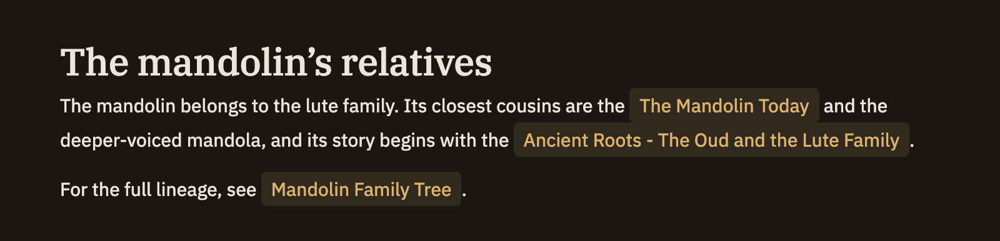

Links
Wiki-links are how you connect one note to another. Type a note's title inside double brackets and Minerva turns it into a live link you can click. A link can also carry a type — supports, rebuts, depends on, and more — so it says what kind of relationship it is, not just that one exists.
Writing a link
The simplest link is a note title wrapped in double brackets. From there you can add a few optional pieces:
[[target]][[ and Minerva suggests matching notes.[[target|display]]| is shown in the note — handy when the title is long or reads awkwardly in a sentence.[[target#Heading]][[type::target]]:: — for example [[supports::climate-study]]. See the list below.You can combine these however you like — a type, a heading, and custom wording all in one link:
This claim is well established.[[supports::experiment-log#Trial 4]]
See [[depends-on::auth-redesign|the redesign proposal]] before touching this.Typed links
A typed link is shown in its own color, so you can see the shape of a note's connections at a glance. These types are built in:
referencessupportsrebutsload-bearing-forexpandsdepends-onimplementsalternative-tosupersedesrelated-tocitequote
Finding the right note
You don't have to type a note's title exactly. Minerva matches on the title, on any alternate names you've given the note in its properties, and even on a short unique piece of the name — so [[raft]] can find a note called "raft" tucked inside a folder. Wherever a link appears, clicking it takes you to the same place.
If two notes could match the same link, Minerva picks the first one it finds. Give notes distinct names, or add an alternate name in a note's properties, to make sure a link lands where you intend.
While editing, clicking a link jumps to the note it points at. Hold ⌘ (or Ctrl) and click to place your cursor inside the link and edit it instead.
Backlinks
Links work in both directions. When you're reading a note, the Backlinks panel in the right sidebar lists every other note that links to it, each labeled and colored by its link type — so you can see at a glance which notes support, rebut, or merely reference the one you're looking at.